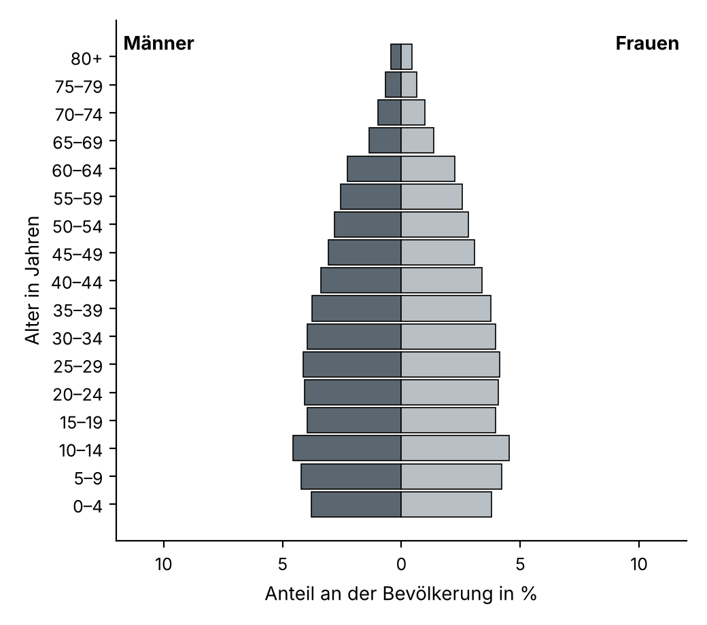

1Berichte in 2 Minuten von deinem Land. Die anderen tragen in die Tabelle ein.●○○ D
2Vergleiche die vier Länder: Basis, Geburtenrate, Sterberate, Wachstum.●●○ E
3Ordne jedes Land einem Typ zu: Pyramide, Glocke oder Urne.●●○ E
Satzbausteine: Die Basis ist breiter als die Mitte, weil … · Die Geburtenrate ist höher als die Sterberate, deshalb …
Sicherung 1 · Eure Ergebnisse
Wir tragen unsere Zahlen ein
5 Min. · Plenum
Unsere Frage: (steht im Fragenfeld)
Land
Geburten-rate
Sterbe-rate
Wachstum
Balken
Nigeria
–
Indien
–
China
–
Deutschland
–
Balken nach rechts: mehr Geburten als Todesfälle. Balken nach links: weniger. Werte in ‰.
1Beschreibe die Balken. Was fällt dir auf?●○○ D
Sicherung 2 · Typen
Welcher Typ ist welches Land?
5 Min. · Plenum
1Ordne jedes Land einem Typ zu. Begründe mit der Basis und den Raten.●●○ E
Nigeria

Indien
China
Deutschland
Pyramide
Glocke
Urne
Sicherung 3 · Merksatz
Wir ergänzen den Merksatz
4 Min. · Plenum, Heft
1Ergänze den Merksatz. Zwei Wörter passen nicht.●●○ E
Ist die Basis breiter als die Mitte, ist die Geburtenrate und die Bevölkerung . Ist die Basis schmaler als die Mitte, ist die Geburtenrate und die Bevölkerung .
hochniedrigwächstschrumpftgleichverschwindet
Transfer
Welches Land wächst in 30 Jahren am stärksten?
3 Min. · Partner
1Beurteile mit deiner Partnerin oder deinem Partner und entscheidet euch für ein Land. Tippt es dann an.●●● F
0Nigeria
0Indien
0China
0Deutschland
2Begründe mit zwei Merkmalen aus der Tabelle oder der Pyramide.●●● F
Satzbausteine: Ich denke, dass … am stärksten wächst, weil … Außerdem …
Reflexion
Was kann ich schon?
2 Min. · allein
Tippe an, wie sicher du dich fühlst. Das ist nur für dich.
Ich kann eine Pyramide beschreiben (Basis, Spitze, Form).
Ich kann erklären, warum eine Pyramide breit oder schmal ist.
Ich kann Länder den Typen Pyramide, Glocke und Urne zuordnen.
1Formuliere auf dem Exit-Ticket eine Frage für nächste Woche. Sie kommt an die Fragenwand.●●○ E


 China
China